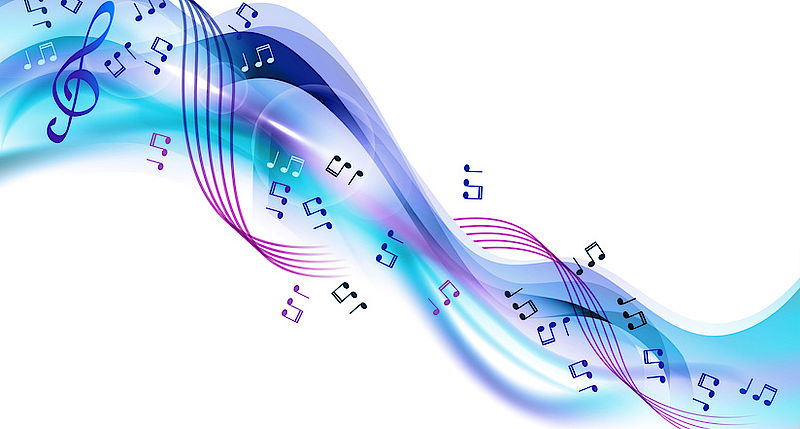
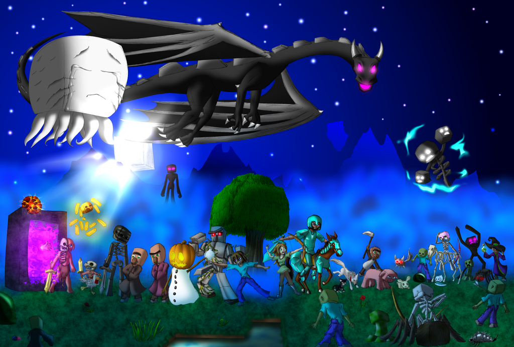

MUSIK

SPEL

YOUTUBE
VÄNNER
SKOLA
MUSIK¤ Jag lysnar på oliga såters musik. Vissa låtar är gammla som ingen kommer i håg, och andra är nya, vissa finstet några som vet vad man lysnar på och ibland lysnar jag på minecraft- och andra spellåtar. Musiken är väldikt viktigt föt mig för att jag har många olaga drömyrken men det jag hälst vill bli är artist.
SPEL¤ Jag har en telefo, en plata, en dator och ett wiiU-sätt. På alla dessa enheter har jag myket spel som jag spelar nästan hela tiden. Jag gör det på min fritid för det mests. (Minecraft är det spelet jag tyker om mest.)
YOUTOBE¤ Det jag också gör på min fritid är att kolla på youtube (vilket jag vet att de flesta också gör).Jag kollar på olika youtobers. Ibland är det gemers, ibland vloogare och nån gång någon som ritar superbra.
VÄNNER¤ Jag har ganska många vänner, men har svårt att skafa en vän. Varge gång jag försöker bli vän med någon så blir jag blyg och vågar inte riktit prata. Vilket är lite konstigt för om det är något grupp arbert så blir jag litte av en boss. Konstikt eller hur? Men som jag sa så har jag ganska många vänner från två skolor...nu när jag tenker på det så har jag vänner från tre skolor.(Nej jag har inte gott i tre skolor bara två.)
SKOLA¤ Påtal om skolan så ska jag snart brja sexsan snart. Jag är mer orligare än gald och deta är det första året. Det jag kommer misslykas mest på är antagligen geografi, NO över huvetaget och staving(mest engelska).